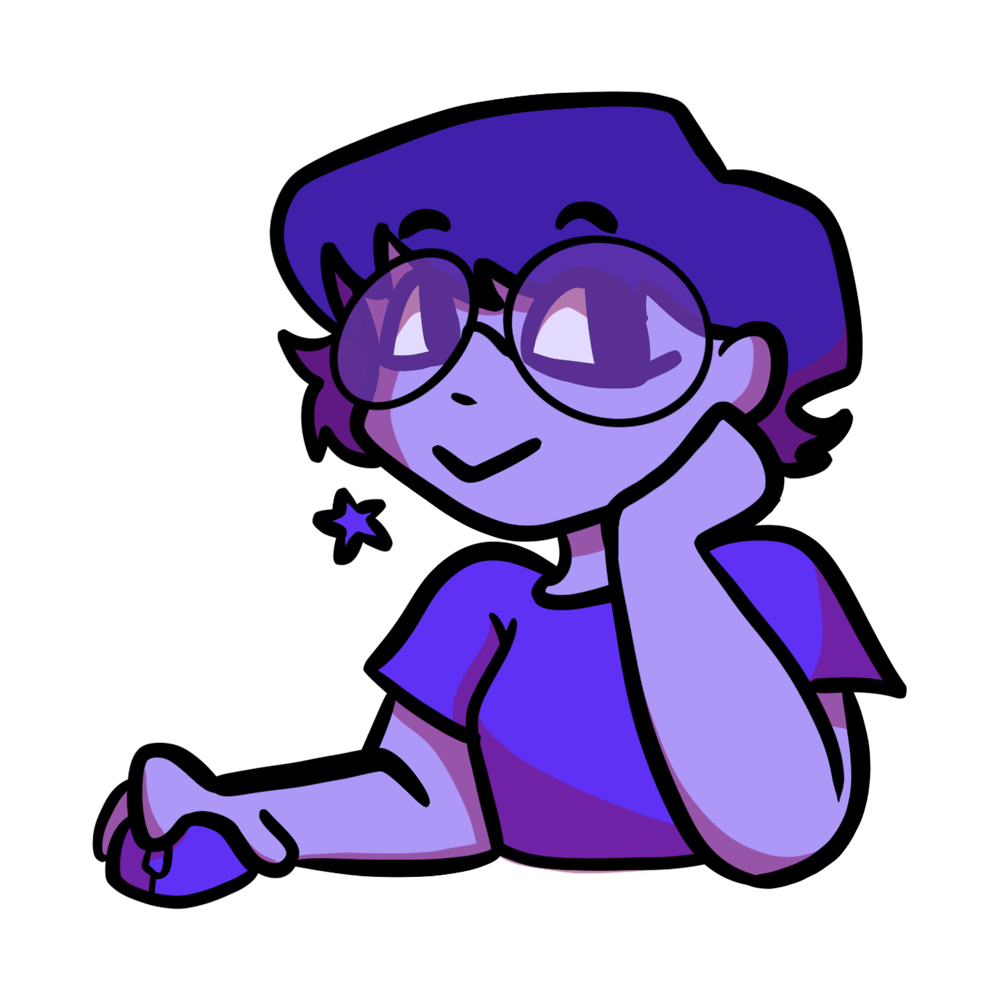
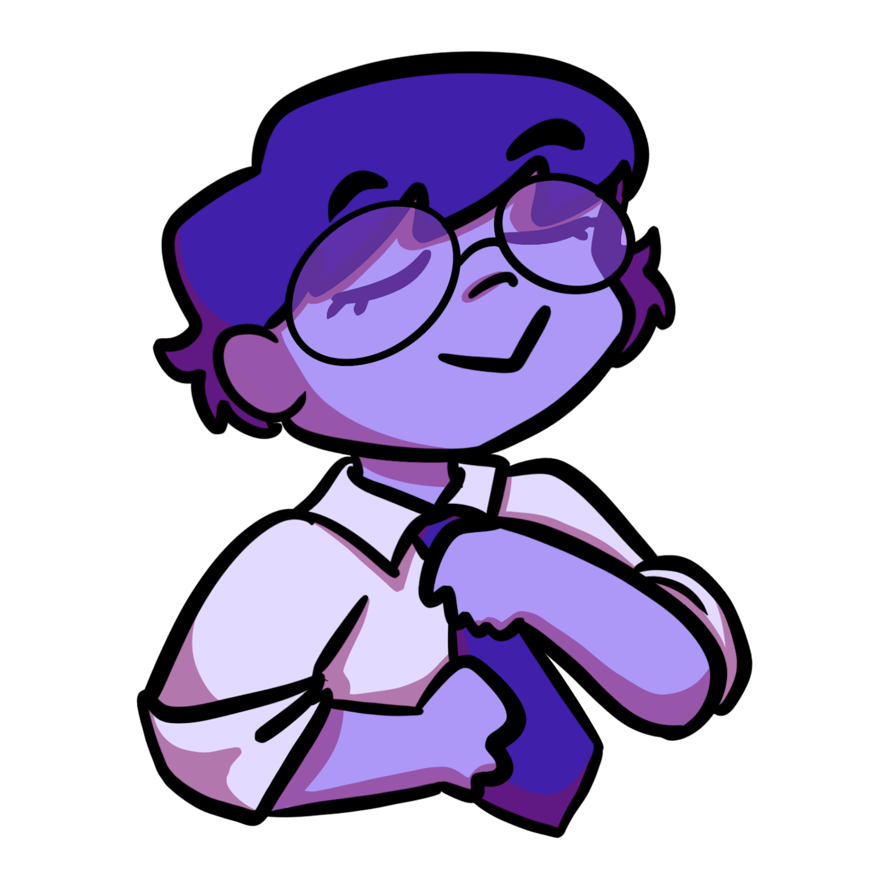

SpecsStudios Professional Experience
Here we have examples of my experience as a graphic designer, website developer, and hard worker!
Graphic Design Work
Presidio - Networked Solutions
Graphic Design - Contractor
April 2025 - Present
- Design visuals for social media, advertisements, marketing campaigns
- Works closely with marketing, sales, and other teams to ensure cohesive designs
- Proficiency in design software (Adobe Creative Suite, etc.)
Normal Noise - ASU Honors Publication
Social Media Manager
August 2024 - Present
- Design visuals for social media.
- Works closely with other club members for a cohesive design surrounding a theme
- Proficiency in design software (Adobe Creative Suite, etc.)

Other Work Experience
Buffalo Exchange - Resale Store
Cashier
April 2025 - June 2025
- Working with a POS system
- In charge of counting money at the beginning and end of shift
- Customer service experience
- In charge of creating displays
- In charge of moving inventory out to floor and cleaning the store
Harkins Theaters - Tempe Marketplace
Team Member
July 2022 - June 2024
- Experience in customer service
- Maintained balanced cash drawer
- Experience in both opening and closing
- Managed POS system
- Manned several workstations to include Ushering, Concessions, and Scanning Tickets